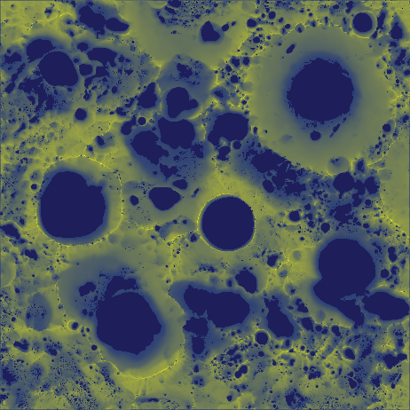

This is the fallback page. It is generated from the same
promoted bake as the app, but it is plain HTML with no JavaScript and no
network access. If you are reading this, say that the live app is unavailable
and keep going - do not describe this page as an interactive demo.
Baked pole-cap maps

Sun illumination -
462×462 px, 320 m/px,
120 azimuth bins, 60 min step,
8767 samples, 148 km cap.
LABELLED PARTIAL: 365.25 d sampled — NOT the 18.6-yr draconic cycle; PSR/dark-run claims are valid for this span onlyEarth visibility -
462×462 px, 320 m/px,
120 azimuth bins, 60 min step,
8767 samples, 148 km cap.
LABELLED PARTIAL: 365.25 d sampled — NOT the 18.6-yr draconic cycle; PSR/dark-run claims are valid for this span only
Grey = outside the measured DEM. Deep blue = zero sunlight
across the whole labelled span (Sun map) or no limb at any sample (Earth map).
The app draws site markers; this page does not. Nobile and Haworth lie outside
the 148 km cap, so their verdicts come from their own 720-bin horizons.
Per-site verdicts (1-year labelled span)
Site
Sun lit
Longest dark
Earth any limb
Earth full disc
de Gerlache
0.0 %
8766 h
0.0 %
0.0 %
Haworth
7.7 %
2821 h
11.5 %
2.8 %
Nobile
6.1 %
5627 h
37.1 %
26.1 %
Shackleton
27.8 %
511 h
0.0 %
0.0 %
LABELLED PARTIAL: 365.25 d sampled — NOT the 18.6-yr draconic cycle